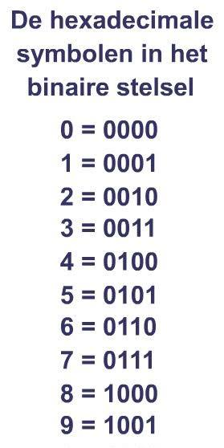

Een bit is de kleinste eenheid van informatie in een computer.
Het woord bit komt van binary digit. Een byte bestaat uit 8 bits.
Binair betekent tweeledig. Het wordt zo genoemd omdat je in het binaire stelsel alle getallen kunt opschrijven met maar twee cijfers: 0 en 1.
Computers gebruiken deze combinatie van nullen en enen om digitale informatie te verwerken.
ASCII wordt gebruikt om letters, cijfers, leestekens en besturingstekens voor een computer weer te geven.
ASCII staat voor American Standard Code for Information Interchange. Dat betekent: Amerikaanse standaardcode voor informatie-uitwisseling.
Het is een standaardcode voor tekens die door computers gebruikt kan worden. Elk ASCII-teken heeft een eigen nummer.
Hieronder kun je klikken om meer informatie over ASCII te vinden:
Klik hier voor informatie over ASCIIHet getal 5 in het decimale stelsel is 101 in het binaire stelsel.
Computers gebruiken deze combinatie van nullen en enen om digitale informatie te verwerken.
